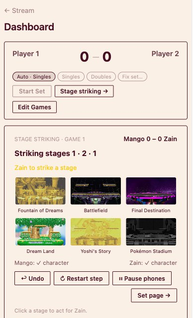

Tournament dashboard
Set score and names, with wins reported from the replays.

You stay in control
The Tournament Dashboard shows the set as it happens. Act for a player, undo, restart a step or pause the phones, and fix the score whenever you need to.

It works from your phone too: walk around the venue with the set and your OBS scenes in your hand.
